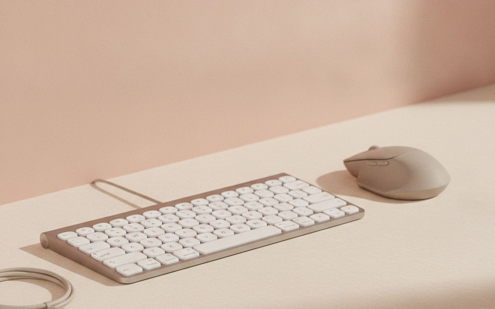
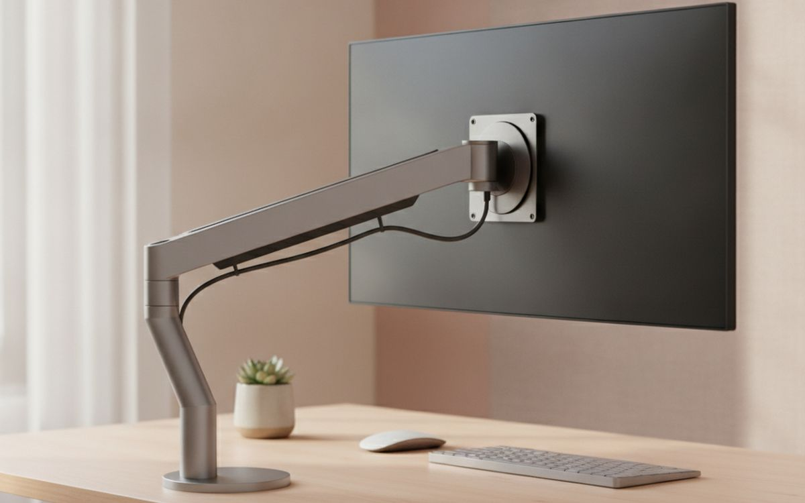
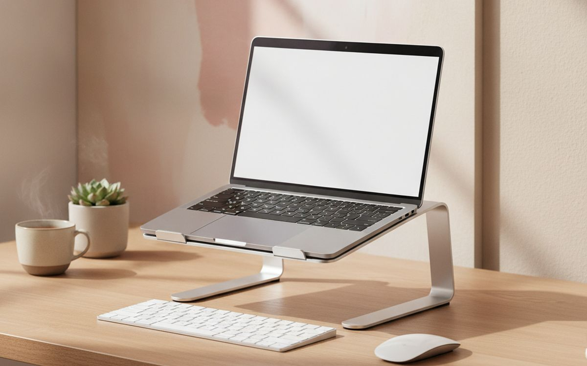
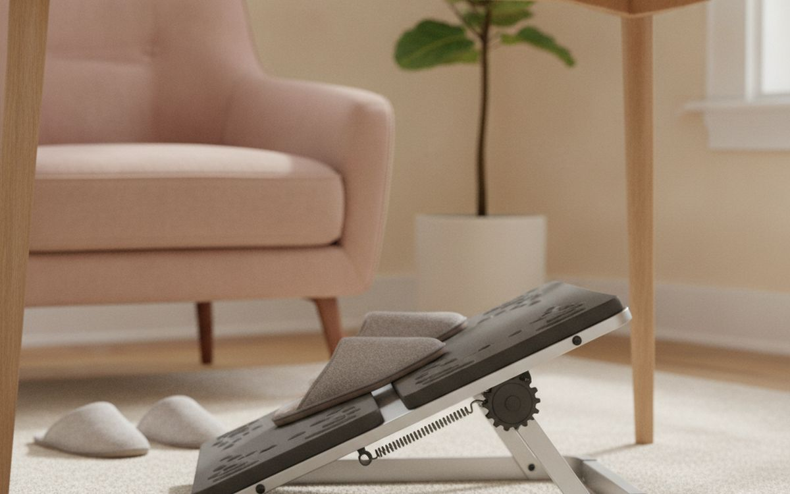
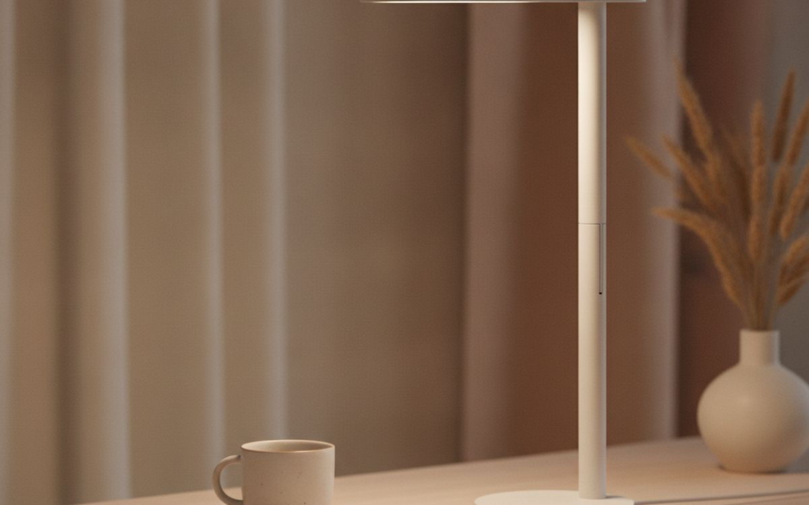
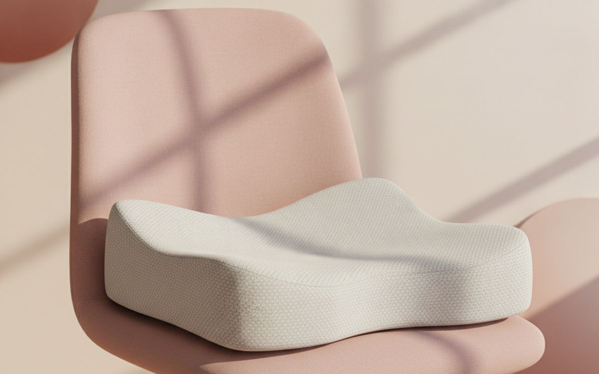
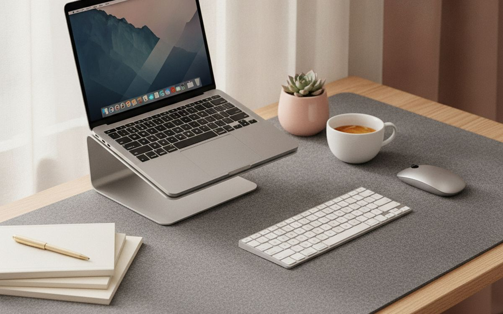
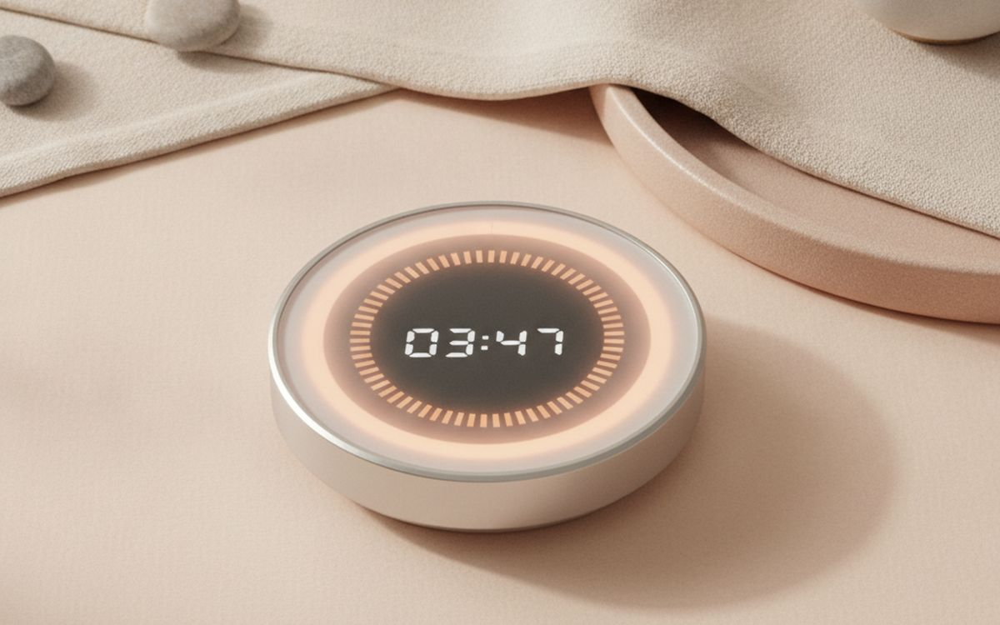
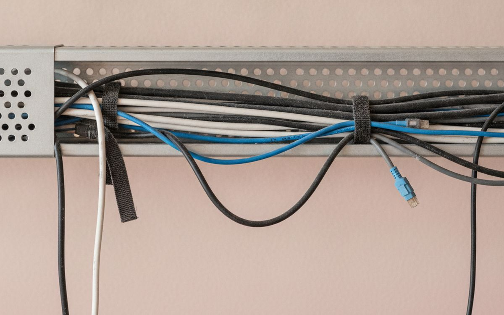

Fix the setup before blaming the furniture. That sounds simple, but this category attracts products designed to photograph well rather than work well. The useful test is whether an item solves a repeated problem, lasts long enough to justify its price, and remains easy to live with after the first week.
This guide concentrates on those practical gains. We favour understandable products over feature lists, repairable or replaceable parts over sealed novelty, and a modest item used every week over an impressive one left in a cupboard. Prices are approximate at the time of writing and change often.
One honest limit: these are researched buying recommendations based on specifications, established safety guidance where relevant, and long-run owner patterns. They are not claims that every model has been personally tested. Fit, taste and individual needs remain personal, and where that matters we say so.
Με λίγα λόγια
A separate keyboard and mouse
THE PLACE TO START
Γνωστοποίηση. Οι σύνδεσμοι σε αυτή τη σελίδα είναι συνδεδεμένοι. Αν αγοράσετε μέσω κάποιου, ενδέχεται να λάβουμε προμήθεια χωρίς επιπλέον κόστος για εσάς. Δεν επηρεάζει το τι μπαίνει στη λίστα ούτε τη σειρά της.
Πώς επιλέξαμε
We looked for products that solve a clear problem, are easy to understand and maintain, and have enough useful life to beat a cheaper disposable alternative. We checked materials, dimensions and the return policy, gave extra weight to warranties and common replacement parts, and marked the compromises instead of hiding them.
Με μια ματιά
Οι τιμές είναι ενδεικτικές κατά τη συγγραφή και αλλάζουν συχνά.
Οι επιλογές

01 · THE PLACE TO STARTA separate keyboard and mouse
A separate keyboard and mouse earns a place because it addresses a specific, recurring problem instead of inventing a new routine. The best version is usually the one with straightforward controls, sensible construction and no unnecessary subscription or proprietary accessory. Before buying, check materials, dimensions and the return policy. A good listing should make those details clear; vague measurements and promises without specifications are a reason to move on. The case for it: solves a repeat problem rather than a one-off inconvenience, available in simple versions without paying for decorative extras, and easy to compare on useful specifications. The trade-off is real: quality varies sharply by maker and measure the space, check compatibility and read the return terms before ordering, so weigh that against how often it would actually get used.
$15–40Ο συμβιβασμός: Quality varies sharply by maker
Γιατί είναι εδώ
- Solves a repeat problem rather than a one-off inconvenience
- Available in simple versions without paying for decorative extras
- Easy to compare on useful specifications
Αξίζει να ξέρετε
- Quality varies sharply by maker
- Measure the space, check compatibility and read the return terms before ordering

02 · THE EVERYDAY UPGRADEA monitor arm
A monitor arm earns a place because it addresses a specific, recurring problem instead of inventing a new routine. The best version is usually the one with straightforward controls, sensible construction and no unnecessary subscription or proprietary accessory. Before buying, check the warranty and availability of replacement parts. A good listing should make those details clear; vague measurements and promises without specifications are a reason to move on. The case for it: solves a repeat problem rather than a one-off inconvenience, available in simple versions without paying for decorative extras, and easy to compare on useful specifications. The trade-off is real: check dimensions before ordering and measure the space, check compatibility and read the return terms before ordering, so weigh that against how often it would actually get used.
$25–70Ο συμβιβασμός: Check dimensions before ordering
Γιατί είναι εδώ
- Solves a repeat problem rather than a one-off inconvenience
- Available in simple versions without paying for decorative extras
- Easy to compare on useful specifications
Αξίζει να ξέρετε
- Check dimensions before ordering
- Measure the space, check compatibility and read the return terms before ordering

03 · SMALL CHANGE, REAL GAINA laptop stand
A laptop stand earns a place because it addresses a specific, recurring problem instead of inventing a new routine. The best version is usually the one with straightforward controls, sensible construction and no unnecessary subscription or proprietary accessory. Before buying, check whether the controls are easy to use. A good listing should make those details clear; vague measurements and promises without specifications are a reason to move on. The case for it: solves a repeat problem rather than a one-off inconvenience, available in simple versions without paying for decorative extras, and easy to compare on useful specifications. The trade-off is real: the cheapest version is rarely the best value and measure the space, check compatibility and read the return terms before ordering, so weigh that against how often it would actually get used.
$40–120Ο συμβιβασμός: The cheapest version is rarely the best value
Γιατί είναι εδώ
- Solves a repeat problem rather than a one-off inconvenience
- Available in simple versions without paying for decorative extras
- Easy to compare on useful specifications
Αξίζει να ξέρετε
- The cheapest version is rarely the best value
- Measure the space, check compatibility and read the return terms before ordering

04 · BUILT FOR REPEAT USEAn adjustable footrest
An adjustable footrest earns a place because it addresses a specific, recurring problem instead of inventing a new routine. The best version is usually the one with straightforward controls, sensible construction and no unnecessary subscription or proprietary accessory. Before buying, check independent owner reports after six months or more. A good listing should make those details clear; vague measurements and promises without specifications are a reason to move on. The case for it: solves a repeat problem rather than a one-off inconvenience, available in simple versions without paying for decorative extras, and easy to compare on useful specifications. The trade-off is real: needs occasional cleaning or maintenance and measure the space, check compatibility and read the return terms before ordering, so weigh that against how often it would actually get used.
$60–180Ο συμβιβασμός: Needs occasional cleaning or maintenance
Γιατί είναι εδώ
- Solves a repeat problem rather than a one-off inconvenience
- Available in simple versions without paying for decorative extras
- Easy to compare on useful specifications
Αξίζει να ξέρετε
- Needs occasional cleaning or maintenance
- Measure the space, check compatibility and read the return terms before ordering

05 · THE VALUE PICKA task light
A task light earns a place because it addresses a specific, recurring problem instead of inventing a new routine. The best version is usually the one with straightforward controls, sensible construction and no unnecessary subscription or proprietary accessory. Before buying, check the total size once it is stored. A good listing should make those details clear; vague measurements and promises without specifications are a reason to move on. The case for it: solves a repeat problem rather than a one-off inconvenience, available in simple versions without paying for decorative extras, and easy to compare on useful specifications. The trade-off is real: takes up some storage space and measure the space, check compatibility and read the return terms before ordering, so weigh that against how often it would actually get used.
$20–55Ο συμβιβασμός: Takes up some storage space
Γιατί είναι εδώ
- Solves a repeat problem rather than a one-off inconvenience
- Available in simple versions without paying for decorative extras
- Easy to compare on useful specifications
Αξίζει να ξέρετε
- Takes up some storage space
- Measure the space, check compatibility and read the return terms before ordering

06 · FOR THE REGULAR USERA supportive seat cushion
A supportive seat cushion earns a place because it addresses a specific, recurring problem instead of inventing a new routine. The best version is usually the one with straightforward controls, sensible construction and no unnecessary subscription or proprietary accessory. Before buying, check whether consumables are proprietary. A good listing should make those details clear; vague measurements and promises without specifications are a reason to move on. The case for it: solves a repeat problem rather than a one-off inconvenience, available in simple versions without paying for decorative extras, and easy to compare on useful specifications. The trade-off is real: not every household needs one and measure the space, check compatibility and read the return terms before ordering, so weigh that against how often it would actually get used.
$80–250Ο συμβιβασμός: Not every household needs one
Γιατί είναι εδώ
- Solves a repeat problem rather than a one-off inconvenience
- Available in simple versions without paying for decorative extras
- Easy to compare on useful specifications
Αξίζει να ξέρετε
- Not every household needs one
- Measure the space, check compatibility and read the return terms before ordering
07 · KEEP IT SIMPLEA document holder
A document holder earns a place because it addresses a specific, recurring problem instead of inventing a new routine. The best version is usually the one with straightforward controls, sensible construction and no unnecessary subscription or proprietary accessory. Before buying, check the weight and how it will be carried. A good listing should make those details clear; vague measurements and promises without specifications are a reason to move on. The case for it: solves a repeat problem rather than a one-off inconvenience, available in simple versions without paying for decorative extras, and easy to compare on useful specifications. The trade-off is real: returns can be awkward and measure the space, check compatibility and read the return terms before ordering, so weigh that against how often it would actually get used.
$12–35Ο συμβιβασμός: Returns can be awkward
Γιατί είναι εδώ
- Solves a repeat problem rather than a one-off inconvenience
- Available in simple versions without paying for decorative extras
- Easy to compare on useful specifications
Αξίζει να ξέρετε
- Returns can be awkward
- Measure the space, check compatibility and read the return terms before ordering

08 · LESS CLUTTER, MORE USEA large desk mat
A large desk mat earns a place because it addresses a specific, recurring problem instead of inventing a new routine. The best version is usually the one with straightforward controls, sensible construction and no unnecessary subscription or proprietary accessory. Before buying, check how easily it can be cleaned. A good listing should make those details clear; vague measurements and promises without specifications are a reason to move on. The case for it: solves a repeat problem rather than a one-off inconvenience, available in simple versions without paying for decorative extras, and easy to compare on useful specifications. The trade-off is real: a simpler version may work just as well and measure the space, check compatibility and read the return terms before ordering, so weigh that against how often it would actually get used.
$30–90Ο συμβιβασμός: A simpler version may work just as well
Γιατί είναι εδώ
- Solves a repeat problem rather than a one-off inconvenience
- Available in simple versions without paying for decorative extras
- Easy to compare on useful specifications
Αξίζει να ξέρετε
- A simpler version may work just as well
- Measure the space, check compatibility and read the return terms before ordering

09 · THE SPECIALIST OPTIONA timer for movement breaks
A timer for movement breaks earns a place because it addresses a specific, recurring problem instead of inventing a new routine. The best version is usually the one with straightforward controls, sensible construction and no unnecessary subscription or proprietary accessory. Before buying, check the stated safety standard and instructions. A good listing should make those details clear; vague measurements and promises without specifications are a reason to move on. The case for it: solves a repeat problem rather than a one-off inconvenience, available in simple versions without paying for decorative extras, and easy to compare on useful specifications. The trade-off is real: availability changes quickly and measure the space, check compatibility and read the return terms before ordering, so weigh that against how often it would actually get used.
$50–150Ο συμβιβασμός: Availability changes quickly
Γιατί είναι εδώ
- Solves a repeat problem rather than a one-off inconvenience
- Available in simple versions without paying for decorative extras
- Easy to compare on useful specifications
Αξίζει να ξέρετε
- Availability changes quickly
- Measure the space, check compatibility and read the return terms before ordering

10 · THE USEFUL EXTRAA cable tray
A cable tray earns a place because it addresses a specific, recurring problem instead of inventing a new routine. The best version is usually the one with straightforward controls, sensible construction and no unnecessary subscription or proprietary accessory. Before buying, check whether it replaces something you already own. A good listing should make those details clear; vague measurements and promises without specifications are a reason to move on. The case for it: solves a repeat problem rather than a one-off inconvenience, available in simple versions without paying for decorative extras, and easy to compare on useful specifications. The trade-off is real: the benefit depends on using it consistently and measure the space, check compatibility and read the return terms before ordering, so weigh that against how often it would actually get used.
$10–45Ο συμβιβασμός: The benefit depends on using it consistently
Γιατί είναι εδώ
- Solves a repeat problem rather than a one-off inconvenience
- Available in simple versions without paying for decorative extras
- Easy to compare on useful specifications
Αξίζει να ξέρετε
- The benefit depends on using it consistently
- Measure the space, check compatibility and read the return terms before ordering
Συχνές ερωτήσεις
Should I buy the cheapest option?
Usually not. The bottom of a category often saves money by using weaker fittings, shorter warranties or parts that cannot be replaced. The right target is the simplest product that meets the real need, not the lowest visible price.
When is the best time to buy?
Watch the normal price for a few weeks if the purchase is not urgent. A percentage badge is not evidence of a deal. Compare the exact model number, shipping cost, warranty and return fee before deciding.
Is used or refurbished reasonable?
Often, especially for durable goods with parts you can inspect. Avoid used safety equipment, hygiene-sensitive products and anything with hidden battery wear unless it comes with testing, a meaningful warranty and an easy return route.
What should I check when it arrives?
Open it within the return window. Confirm dimensions and included parts, inspect for damage, test every control, and keep the packaging until you know it works in the place and routine you bought it for.
Οι προσφορές σήμερα
Δείτε τι είναι σε έκπτωση αυτή τη στιγμή.
Προσφορές →← Όλοι οι οδηγοί
Ως συνεργάτες της AliExpress, κερδίζουμε από επιλέξιμες αγορές. Οι τιμές και η διαθεσιμότητα ισχύουν κατά την ημερομηνία δημοσίευσης και ενδέχεται να αλλάξουν.